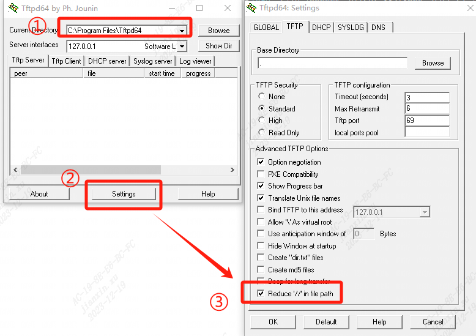
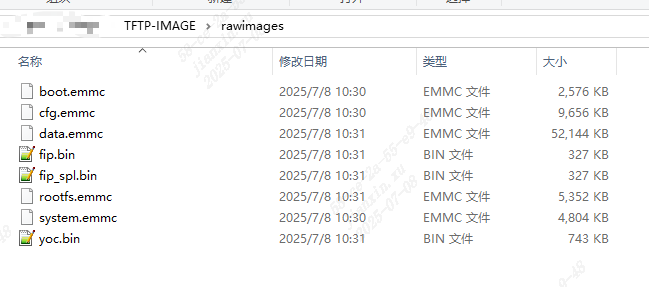
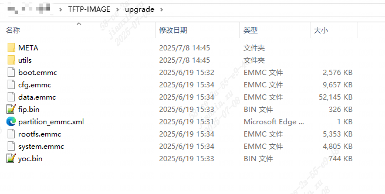
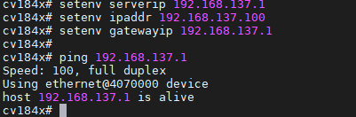

5.1. 使用 TFTP 加载固件到DDR¶
5.1.1. 使用前准备¶
下载tftp上位机软件:

对 tftpd64 工具进行以下配置:
进入setting界面,勾选TFTP页面中的Reduce ‘//’ in file path。
{kind=link}

准备固件包
如果是使用源码自行编译的固件，“sdk/install/soc_芯片名” 路径下有名为upgrade.zip的压缩包和rawimages的文件夹。如下图所示 ：
{kind=link}

{kind=link}

5.设置TFTP 软件
将升级包放到tftp目录下，或者使用上位机软件“Browse”定位到固件路径，路径不要有中文和空格等非法字符。
点击PC server的“Show Dir”按键，可以显示当前路径下的文件。
Server interfaces设置为本机的网络接口，例如192.168.137.1；

配置PC和板卡在同一网段
通过网线连接PC端网口和板卡端LAN口
配置PC端ip为192.168.137.1
配置板卡端ip为192.168.137.11
通过在uboot命令行下键入以下命令来设置板卡ip，执行saveenv保存设置：
1 setenv ipaddr 192.168.137.11
2 setenv gatewayip 192.168.137.1
3 setenv serverip 192.168.137.1
4 ...
ipaddr是板端IP，serverip是tftp server所在PC的IP，gatewayip是网关地址。
测试连通性 - 在uboot下直接ping PC端ip地址，下图表示可以正常通信
1 ping 192.168.137.1
{kind=link}

5.1.2. TFTP加载固件¶
从tftp服务器下载文件到指定内存地址
tftp下载固件的时候，要先下载到DDR内存中，为了避免踩到uboot的内存空间，可以从0x82000000开始写入。
1 # 以emmc 举例如下
2 # 每次加载固件前将ddr 目标区域写0
3 mw.b 0x82000000 0 0x2000000
4 # 加载文件到DDR，
5 # 可以加载文件到同一位置，并参考下一节把DDR内文件写入Flash，然后重复操作下一个文件
6 # 也可以加载到DDR不同位置，并参考下一节把DDR内文件写入Flash，请注意不要踩内存
7 tftpboot 0x82000000 fip.bin
8 # boot等文件需要使用rawimages下的文件
9 tftpboot 0x82100000 yoc.bin
10 tftpboot 0x82280000 boot.emmc
11 tftpboot 0x82580000 rootfs.emmc
12 tftpboot 0x82d80000 cfg.emmc
13 tftpboot 0x83780000 system.emmc
头部处理
如果使用Upgrade压缩包中的固件就需要删除固件的前128字节头(boot.emmc和rootfs.emmc头部，而且rootfs.emmc除了开头128字节头外，每隔16M都有64字节的头部)
使用rawimages文件夹中的固件就不用删除头部